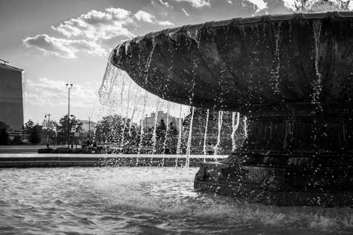

I am no professional photographer, but I have found it to be an exciting hobby. There is something simply awing about freezing the world in a moment of time in which even the mundane can become interesting.
College Living
View of my sophomore college apartment bedroom.
High Traffic
Traffic cone I found on the 19th floor landing of my apartment building.
Open Flow
Water pipe valve in my apartment building.
19 Stories Up
Looking down through the crack between the stairs of my apartment stairwell.
Ascension PT. I
Looking up at the stairwell railing in my apartment building.
Ascension PT. II
Looking up at the stairwell railing in my apartment building.
URBN Perspective
View from inside the URBN Center lobby at Drexel University.
URBN Rafter
One of many exposed I beams that forms the core of the URBN Center at Drexel University.
College Transportation
Looking through bike racks in front of the URBN Annex at Drexel University.
Philly Transportation
View of the underside of the Market-Frankford Line just off of Girard Station.
Connections
Looking up at glass walkways connecting parts of the Piazza apartment complex.
Piazza in Perspective
Looking up in front of an alley next to the Piazza apartment complex.
Smallness
Gazing up at the sky from a dumpster alley in North Philly.
Urban Lighting
Light post on Market Street, Philadelphia, above the Schuylkill River.
Under Philly Streets
Underside of Arch Street, Philadelphia, along the Schuylkill River Trail.
Urban Art
Grafitti taken through a chain link fence along the Schuylkill River Trail.

Fountain Spray
Fountain located in front of the Philadelphia Museum of Art taken moments before disaster when the wind blew all that water right in my face.
College Life
Portrait of my roommate, Beck, in the midst of his college experience.
College Cleaning
Portrait of my friend Ryan cleaning his dishes taken in the reflection of his window.
Fork
Portrait of a fork being held by my roommate Elton.
Cat
Portrait of my mother's cat Hagrid.
Cat in a Basket
Portrait of my mother's cat Hagrid sitting in a basket.
Milk Thief
Portrait of my cat Star begging for the milk from my cereal bowl.
Hand in Time
My grandmother's hand as she relaxes on her couch.
Resting Dog PT. I
My dog Gigi swaddling herself in a blanket.
Resting Dog PT. II
My dog Gigi swaddling herself in a blanket.
Judge and Jury
Portrait of my cat Star looking down distastefully at my dog Gigi.